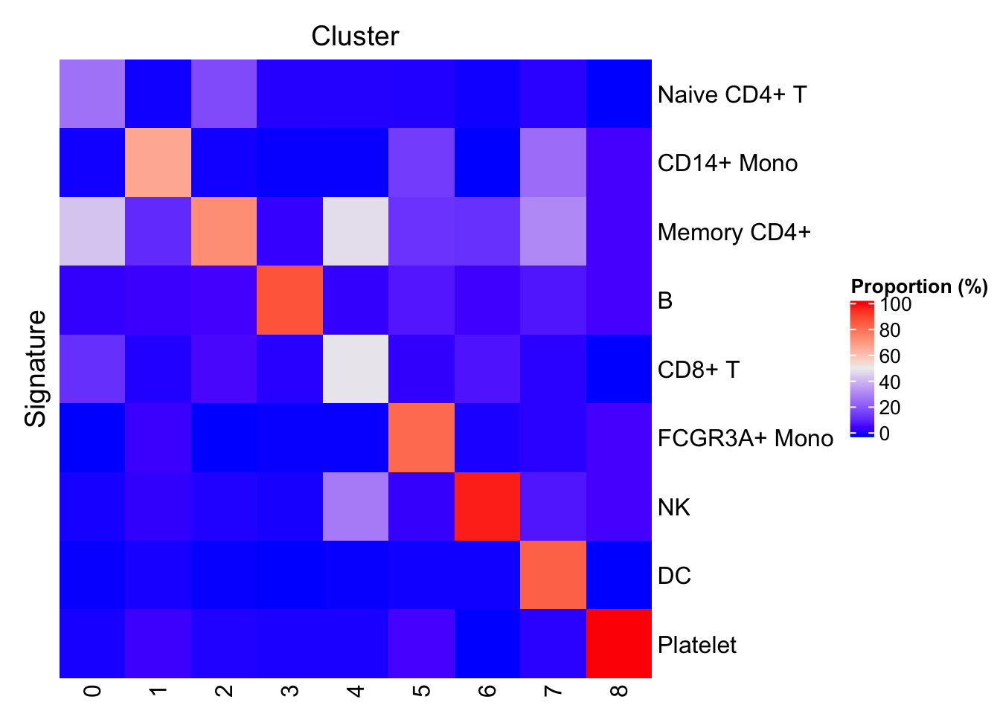
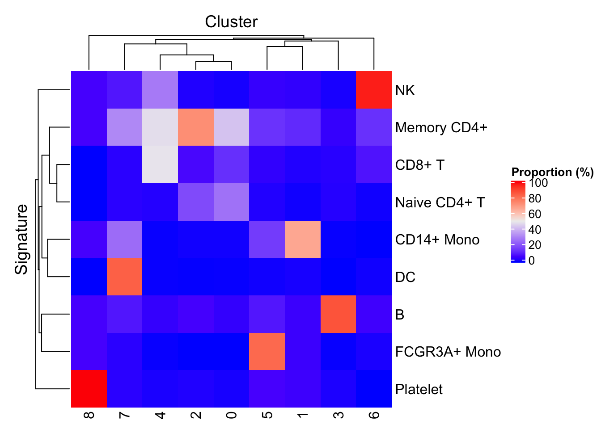
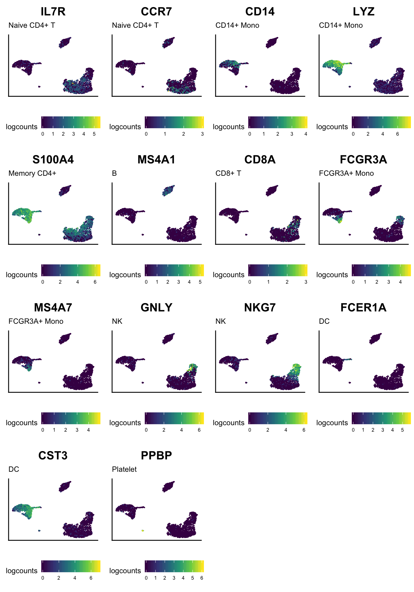

First, load the SingleCellExperiment object of 10X Genomics 2,700 peripheral blood mononuclear cells (PBMC) preprocessed in a previous vignette.
library(SingleCellExperiment)
sce <- readRDS("pbmc3k_tutorial.sce.rds")
sce## class: SingleCellExperiment
## dim: 32738 2638
## metadata(0):
## assays(1): counts
## rownames(32738): ENSG00000243485 ENSG00000237613 ...
## ENSG00000215616 ENSG00000215611
## rowData names(3): ENSEMBL_ID Symbol_TENx Symbol
## colnames: NULL
## colData names(12): Sample Barcode ... Date_published seurat.ident
## reducedDimNames(2): PCA TSNE
## spikeNames(0):Declare the predefined gene signatures used in the Seurat - Guided Clustering Tutorial.
library(unisets)
geneLists <- list(
"CD4 T cells"=c("IL7R"),
"CD14+ Monocytes"=c("CD14", "LYZ"),
"B cells"=c("MS4A1"),
"CD8 T cells"=c("CD8A"),
"FCGR3A+ Monocytes"=c("FCGR3A", "MS4A7"),
"NK cells"=c("GNLY", "NKG7"),
"Dendritic Cells"=c("FCER1A", "CST3"),
"Megakaryocytes"=c("PPBP")
)
basesets <- as(geneLists, "Sets")
basesets## Sets with 12 relations between 12 elements and 8 sets
## element set
## <character> <character>
## [1] IL7R CD4 T cells
## [2] CD14 CD14+ Monocytes
## [3] LYZ CD14+ Monocytes
## [4] MS4A1 B cells
## [5] CD8A CD8 T cells
## ... ... ...
## [8] GNLY NK cells
## [9] NKG7 NK cells
## [10] FCER1A Dendritic Cells
## [11] CST3 Dendritic Cells
## [12] PPBP Megakaryocytes
## -----------
## elementInfo: IdVector with 0 metadata
## setInfo: IdVector with 0 metadatapredict methodThe basesets object can immediately be supplied to the predict S3 method, in combination with the SummarizedExperiment object to annotate. However, the cell type signatures described in the Seurat - Guided Clustering Tutorial use gene symbol identifiers, which do not match the Ensembl gene identifiers used in rownames(sce). Here, to make the gene identifiers compatible between the data set and the signatures, we simply replace the Ensembl gene identifiers by the "Symbol_TENx" gene metadata, after making duplicated values unique.
library(hancock)
rownames(sce) <- make.unique(rowData(sce)[["Symbol_TENx"]])
sce <- predict(basesets, sce, method="ProportionPositive", cluster.col="seurat.ident")The updated SummarizedExperiment object is returned, with a number of additional metadata.
The key output is the cell identity predicted for each cell in the object. This information is stored in colData(sce)[["hancock"]][["prediction"]], or sce$hancock$prediction, in short.
table(sce$hancock$prediction)##
## CD4 T cells CD14+ Monocytes B cells CD8 T cells
## 1151 479 342 308
## FCGR3A+ Monocytes NK cells Dendritic Cells Megakaryocytes
## 157 155 32 14With method="ProportionPositive", all cells in each cluster are annotated with the predominant signature in their associated cluster. As such, the cell type prediction may be tabulated against the cluster membership of each cell. This view can potentially highlight multiple clusters labelled by the same predicted label as a sign of overclustering.
table(sce$hancock$prediction, sce$seurat.ident)##
## 0 1 2 3 4 5 6 7
## CD4 T cells 1151 0 0 0 0 0 0 0
## CD14+ Monocytes 0 479 0 0 0 0 0 0
## B cells 0 0 342 0 0 0 0 0
## CD8 T cells 0 0 0 308 0 0 0 0
## FCGR3A+ Monocytes 0 0 0 0 157 0 0 0
## NK cells 0 0 0 0 0 155 0 0
## Dendritic Cells 0 0 0 0 0 0 32 0
## Megakaryocytes 0 0 0 0 0 0 0 14In addition to the final predictions, the updated SummarizedExperiment object also contain some additional information tracing to the process of prediction. That information can be found in metadata(sce)[["hancock"]].
names(metadata(sce)[["hancock"]])## [1] "GeneSets" "method"
## [3] "packageVersion" "ProportionPositiveByCluster"
## [5] "TopSignatureByCluster"In particular:
GeneSets stores the object that provided the gene set signatures used for the predictionmethod stores the name of the method used to make the predictionspackageVersion stores the version of the hancock package used to make the predictionsSpecifically, method="ProportionPositive" adds the following metadata items:
ProportionPositiveByCluster stores the matrix indicating the proportion of cells in each cluster that are positive for each signatureTopSignatureByCluster stores a named vector that indicates the predominant signature for each cluster. It is shown below.metadata(sce)[["hancock"]][["TopSignatureByCluster"]]## 0 1 2 3
## CD4 T cells CD14+ Monocytes B cells CD8 T cells
## 4 5 6 7
## FCGR3A+ Monocytes NK cells Dendritic Cells Megakaryocytes
## 8 Levels: CD4 T cells CD14+ Monocytes B cells ... MegakaryocytesIt is possible to visualize the proportion of cells positive for each signature in each cluster as a heat map. Note how the diagonal (displaying the tutorial annotations) shows high proportions of cells matching the annotated signature.
plotProportionPositive(sce, cluster_rows=FALSE, cluster_columns=FALSE)
We can also let signatures and clusters of cells cluster in the heat map. Unsurprisingly, the subpopulations of monocytes show some similarity, as do the subpopulations of CD4 positive and CD8 positive T cells.
plotProportionPositive(sce)
With a bit more code, we can also display the expression of each marker on the result of t-SNE dimensionality reduction.
library(ggplot2)
library(cowplot)
ggList <- list()
for (markerName in ids(elementInfo(basesets))) {
ggDataFrame <- data.frame(
reducedDim(sce, "TSNE"),
logcounts=log2(assay(sce, "counts")[markerName, ] + 1)
)
cellIdentity <- subset(as.data.frame(basesets), element == markerName, "set", drop=TRUE)
gg <- ggplot(ggDataFrame, aes(tSNE_1, tSNE_2, color=logcounts)) +
geom_point(size=0.1) +
scale_color_viridis_c() +
labs(title=markerName, subtitle=cellIdentity, x=NULL, y=NULL) +
theme(
axis.text = element_blank(), axis.ticks = element_blank(),
text = element_text(size=rel(3)), legend.text = element_text(size=rel(2)),
legend.position = "bottom")
ggList[[markerName]] <- gg
}
cowplot::plot_grid(plotlist = ggList)